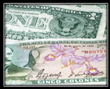

SOME USEFUL TIPS TO HELP YOU PLAN YOUR
BACHELOR PARTY, GROUP VACATION OR SPECIAL EVENT IN
JACO BEACH & LOS SUEÑOS COSTA RICA!


•••
Frequently Asked Questions about planning a vacation to Costa Rica:
Do I need a Passport or Visa to enter Costa Rica?
As a vacationing American, British, Canadian or European citizen, a valid passport (with at least six months remaining before expiry) is required to enter Costa Rica, but a visa is not necessary. For other nationalities please consult the Costa Rica government web site.
Is any vaccination or immunization required or suggested for travelling to Costa Rica?
No, not necessary.
What is the easiest and best way to arrive in Jaco from the airport?
Flying into San Jose Airport (SJO) and then having us pick you up and drive you to Jaco in the comfort of an air conditioned private bus.
How long is the drive from San Jose Airport to Jaco?
Depending on traffic, and how long we stop for on the way, between 1 hour 15 minutes and 2 hours.
Is Jaco safe at night?
Yes. Generally speaking, most anyone would feel safe to walk along the main strip at night. There are police officers patrolling the main streets and private security guards on most private property - there is a police station on the beach road near the center of town.

What currency of money is most commonly used in Costa Rica?
US Dollars and Costa Rican Colones are both widely used and accepted. It is advantageous to have both on hand - depending on circumstances.
Are ATM's available? Can I use Credit Cards?
There are several ATM machines located throughout Jaco but only a few of them dispense your choice of local colones or US dollars. Credit cards are widely accepted (but not everywhere). There are also a couple of exchange places and regular banks on the main strip.
Do I need to speak Spanish to get by in Jaco?
Many locals have learned to speak some English, but of course some basic Spanish at your end would help... and then there may be some cases where hand signals and elaborate gestures are the only way to communicate.
Can I use my cell phone while in Costa Rica?
Some providers offer roaming features that work in Costa Rica, others do not. It is best to check with your cell phone company for rates and availability.
Can I use my laptop in Costa Rica? What kind of plugs and voltage are used?
Electrical outlets throughout Costa Rica are 110v just like in the U.S. or Canada.
Is WiFi available in Jaco’s Restaurants & Bars?
Free WiFi hot spots have become common in Jaco and is available in many bars and restaurants.
What are the beaches like?
Jaco's beach is nearly 3 miles long. Most of the beach is sandy with a few rocky patches. The surf and undertow are moderate most of the year. At high tide you will see many surfers riding the waves. Other beaches in the area are Herradura, Hermosa, Esterillo and Playa Blanca which are all within a half hour drive.
What should I pack?
It's hot in Jaco during the day. Be sure to pack flip flops, shorts and loose clothing. You may also want sun block and insect repellant. Nights are slightly cooler. Most restaurants and clubs are casual - but some people like to dress up. Other essentials include a camera, a copy of your driver's license and passport, sunglasses, comfortable shoes, hiking boots and a pair of jeans. Although there are several pharmacies in the area
we suggest packing all prescription meds you might need during your stay.
What is Jaco's nightlife like?
Jaco used to be a sleepy surf town but has since grown to a large beach town now boasting stylish VIP Lounges with bottle service, Dance Clubs that are open until morning, Beach Bars and Rock Bars - some just feet from the beach with spectacular views, and many others that line up and down the main strip in Jaco center.Most Clubs and Bars have popular nights and times that are most busy and full of fellow party mongers. When you book with JacoVIP, you will receive a fact sheet and event list that will help guide your specific party needs and desires.
House and Techno / Heavy Metal / Hip Hop / Classic Rock / Salsa / 80s Hits / Reggaeton / Funk and Disco / Live Music or DJ -- Whatever you’re into, there’s a spot in Jaco that is sure to please.
What kind of dining and restaurants are available?
Local Sodas (Costa Rican restaurant) - American Classics - Mexican Food - Sushi - Italian and others. Once again, Jaco has it all. There are a wide variety of restaurants in Jaco, as well as some fantastic alternatives in neighboring beach towns, and so it pays to know where to go. JacoVIP supplies you with everything you need to find your way around town.
Is tap water safe to drink?
We recommend drinking bottled water instead of tap water. Most bars and restaurants use purified water for their ice cubes.
Are there casinos in Jaco?
Gambling is legal in Costa Rica. The Jaco Beach area has a couple of good casinos for slot machines, roulette and poker.Texas Hold'Em can be played in a casino most any night of the year.